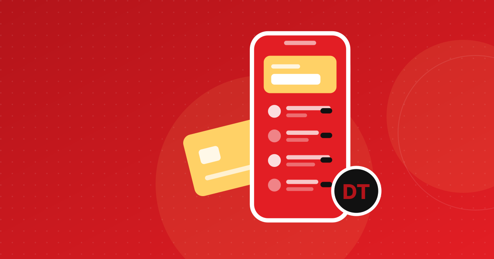

Mobile Payment Apps in Tunisia 2026: D17, Flouci, walletii, Kashy, izi
Tunisia now has 719,000 mobile wallets run by 20 providers. Here is how the main apps compare (La Poste's D17, Flouci, walletii, Kashy, izi and Payvago) and how to pick the right one.

Key takeaways
- Six apps matter most in 2026: La Poste's D17, Flouci, Ooredoo's walletii, Tunisie Telecom's Kashy, Banque Zitouna's izi and Poulina's Payvago.
- They differ mainly in who stands behind them (a public operator, a startup with partner banks, telecom operators, a bank) and in how you load cash: post offices, bank accounts or agent networks.
- All work in dinars and inside Tunisia only, and wallet balances are capped at TND 1,500, 5,000 or 20,000 depending on how far you verify your identity.
- Look for the TunPay label at merchants, check fees in the app before you transfer, and pick the app whose cash-in points are closest to you.
Paying by phone has become a real option in Tunisia. The Central Bank (BCT) counted 719,000 mobile wallets at the end of September 2026, up 53% in a year, run by 20 payment service providers. With telecom operators joining La Poste, banks and startups, the choice can be confusing. This guide compares the main apps for everyday users. It is based on our company directory, which sources every profile; fees change often, so check them in each app before you pay.
Which mobile payment apps can you use in Tunisia?
| App | Run by | Type | How you add money | Notable features |
|---|---|---|---|---|
| D17 / e-Dinar | La Poste Tunisienne (public) | Postal wallet and prepaid cards | Post offices, postal account | Free e-Dinar wallet since July 2025, school and university fees, wide online acceptance |
| Flouci | Kaoun (startup), accounts at partner banks | App-based bank account and wallet | Bank transfer, cardless ATM, card | IBAN, dinar card, QR payments, merchant gateway |
| walletii | OFT Tunisie (Ooredoo), licensed payment institution | Telecom wallet | walletii agents | Launched August 2026, QR payments, bills |
| Kashy | Tunisie Telecom with Viamobile (licensed payment institution) | Telecom wallet | Tunisie Telecom outlets, agents | Launched March 2026, send, receive, withdraw |
| izi | Zitouna Payment (Banque Zitouna group) | Bank-owned wallet | Agents, Banque Zitouna | Top-ups for all operators, agent network for non-smartphone users |
| Payvago | Poulina Group, licensed payment institution | Wallet | Agents | Remote opening, merchant and bill payments; little news since 2024 |
Banks also offer their own payment apps for existing customers, such as Amen Bank's AmenPay, and Attijari and BTE customers can use Flouci with their accounts.
La Poste: D17 and e-Dinar
La Poste is the oldest player. Its e-Dinar cards have been accepted online for years, by government sites and most payment gateways, which made them the go-to option for people without a bank card. Since July 2025 the e-Dinar wallet is free for ten years, and the D17 app handles transfers, money orders, bill payments and merchant payments. The big advantage is the network of post offices across the country, including in places with no bank branch. La Poste does not publish D17 user figures.
Best for: people without a bank account, paying government and school fees, buying online on Tunisian sites.
Flouci
Flouci, built by the startup Kaoun, is the most "app-like" option. It is not a bank: accounts are held by partner banks (Attijari Bank and BTE), and the company describes itself as a payment facilitator authorised by the BCT. You get an account with an IBAN, a dinar card, transfers by phone number or QR code, cardless ATM withdrawals and bill payments. Merchants such as Monoprix accept Flouci QR payments, and Orange Tunisie integrated the wallet into its Max It app in 2025. The company cited more than 140,000 accounts opened by June 2026.
Best for: smartphone users who want a full digital account, freelancers and small online sellers.
Telecom wallets: walletii and Kashy
2026 is the year Tunisia's telecom operators entered payments. walletii by Ooredoo is run by OFT Tunisie, which got its definitive payment institution licence in March 2026 and launched commercially in late August. It offers transfers, bill payments, QR payments and cash deposits and withdrawals through walletii agents. Kashy, Tunisie Telecom's wallet, launched on 17 March 2026 with Viamobile as the licensed payment institution, starting in about 30 Tunisie Telecom outlets. Neither has published user numbers yet.
Best for: prepaid mobile users who already visit their operator's shops, and sending money to family inside Tunisia.
izi and Payvago
izi is the app of Zitouna Payment, the payment institution of the Islamic bank Banque Zitouna. Launched in 2022, it offers account opening, transfers, bill payments and top-ups for all operators, with a network of agents for customers without a smartphone. Payvago, Poulina Group's payment institution, has been licensed since February 2023 and offers a wallet with remote opening, agent cash services and bill payments. We have found little news about it since 2024. Both have been admitted to the SIBTEL interbank clearing system, so they can exchange transfers directly with banks.
Best for: izi suits customers who want a Sharia-compliant provider; Payvago is worth checking if its agents are near you.
How much can you keep in a wallet?
Wallets run by payment institutions are payment accounts with three levels, set by BCT Circular 2026-10:
| Level | Maximum balance | Daily cash withdrawal |
|---|---|---|
| Level 1 | TND 1,500 | Not reported |
| Level 2 | TND 5,000 | TND 3,000 |
| Level 3 | TND 20,000 | TND 10,000 |
The more identity checks you complete, the higher your level. Wallets work only in dinars and inside Tunisia; to receive money from abroad, see our guide to receiving money in Tunisia and our transfer comparator.
How to choose
- Where can you add and withdraw cash? For most people this matters more than features. Check where the nearest post office, operator shop or agent is.
- Where will you pay? Look for the TunPay label, the national mobile payment logo the BCT introduced in May 2026, at shops and in apps.
- Do you need an IBAN or a card? Flouci and bank apps give you a real account; telecom and agent-based wallets are simpler payment accounts.
- Check fees in the app before transfers and withdrawals; they differ by provider and change often.
- Your money is protected, but it is not a deposit. Payment institutions must keep client funds in a segregated account at a bank, but wallets pay no interest.
Frequently asked questions
What is the best mobile payment app in Tunisia?
It depends on how you will use it. D17 (La Poste) suits people without a bank account and online payments on Tunisian sites; Flouci offers a full app-based account with an IBAN; walletii and Kashy suit telecom customers who load cash in operator shops; izi suits those who want a Sharia-compliant provider.
How many mobile wallets are there in Tunisia?
The Central Bank of Tunisia counted 719,000 mobile wallets at the end of September 2026, run by 20 payment service providers.
Can I use a Tunisian mobile wallet abroad?
No. Tunisian wallets operate in dinars and inside Tunisia only. To pay foreign websites you need an international technology card, and to receive money from abroad you need a bank account or a money transfer service.
What is the maximum balance on a Tunisian wallet?
Under BCT Circular 2026-10, wallet balances are capped at TND 1,500 (level 1), TND 5,000 (level 2) or TND 20,000 (level 3), depending on how far you have verified your identity.
Sources
- Les Tunisiens ont de plus en plus le réflexe du paiement digital, selon la BCT — Managers (10 Nov. 2026)
- Tunisia's state telecom operator enters digital services with Kashy mobile wallet — Ecofin Agency (Mar. 2026)
- OFT Tunisie, filiale d'Ooredoo Fintech, officiellement agréée par la BCT — Webmanagercenter (16 Mar. 2026)
- Zitouna Payment dévoile son application de paiement mobile izi — L'Économiste Maghrébin (25 Mar. 2022)
- Flouci by Kaoun, The Middle East's Fintech 50 2025 — Forbes Middle East
- Payvago de PGH : la révolution des paiements mobiles — Managers (2 Aug. 2023)
- Paiement mobile en Tunisie : la BCT resserre les règles avec sa nouvelle circulaire n°2026-10 — Challenges (25 Sept. 2026)
This article is for information only and is not legal, financial or investment advice. Figures are dated and sourced; check the latest official publications before making decisions.